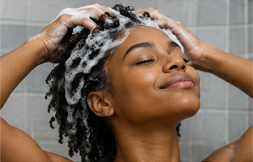

Nutrition
A balanced diet provides nutrients that support overall health, including healthy hair.
Understand why your hair may shed is the first step to caring for it.
Hair Shedding can happen for different reasons. Learning about common causes and simple causes-hair-care habits can help you understand and care for your hair.
There are many factors that can influence your hair's health. Here are some common ones.
Stress can sometimes affect the hair growth cycle and lead to increased shedding.
A balanced diet provides nutrients that support overall health, including healthy hair.
Hormonal changes during pregnancy, menopause, or other life stages can affect the hair growth cycle.

Hair Care
Being gentle with your hair can help reduce unnecessary damage. Use a gentle shampoo, avoid brushing too hard, and try not to use too much heat.
Healthy Hair
Healthy hair also depends on your overall health. Eating balanced meals with enough protein, vitamins, and minerals can support normal hair growth.
If you notice sudden or unusual hair loss, speak with a healthcare professional.
Learn About NutritionYour Hair Matters
Every person's hair is different. Choose a gentle routine that works for you.
Explore Hair Products